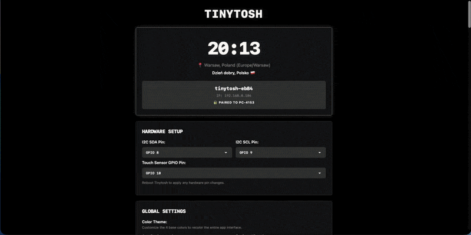
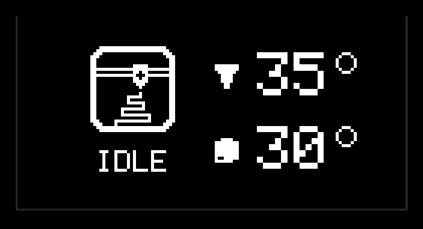
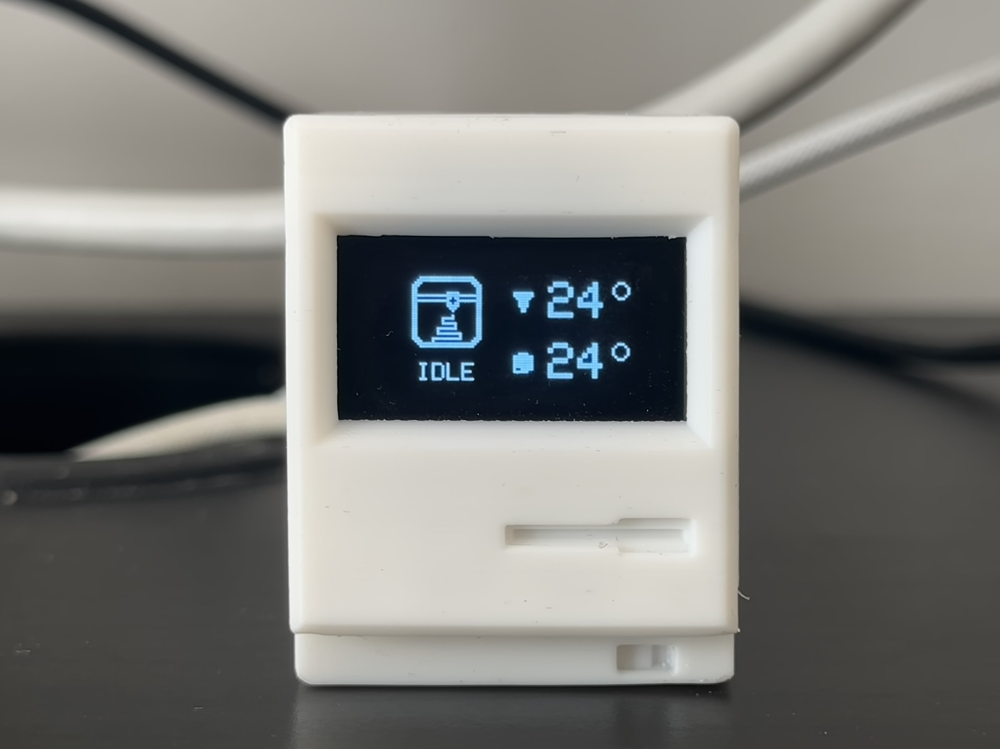
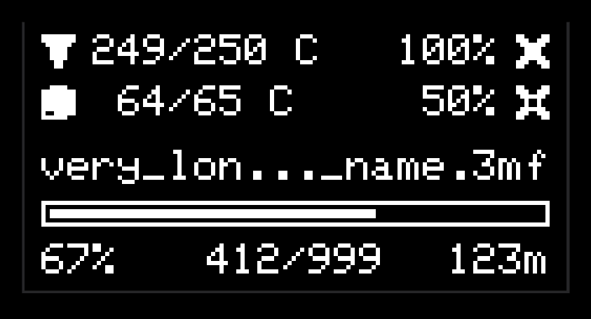
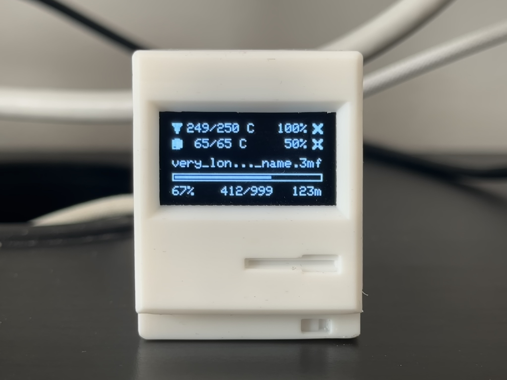
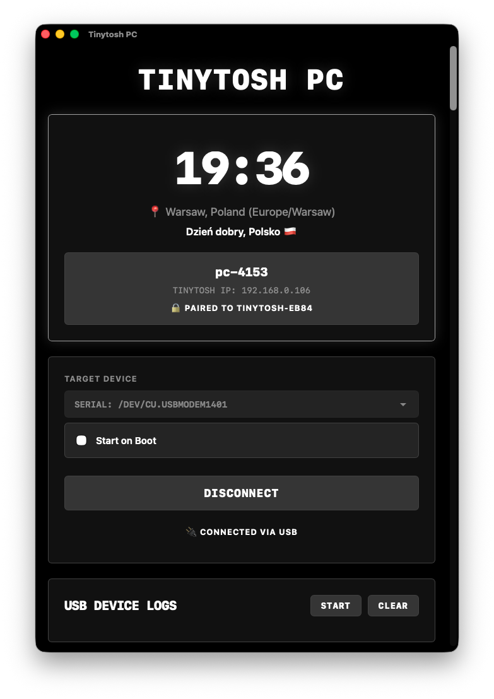
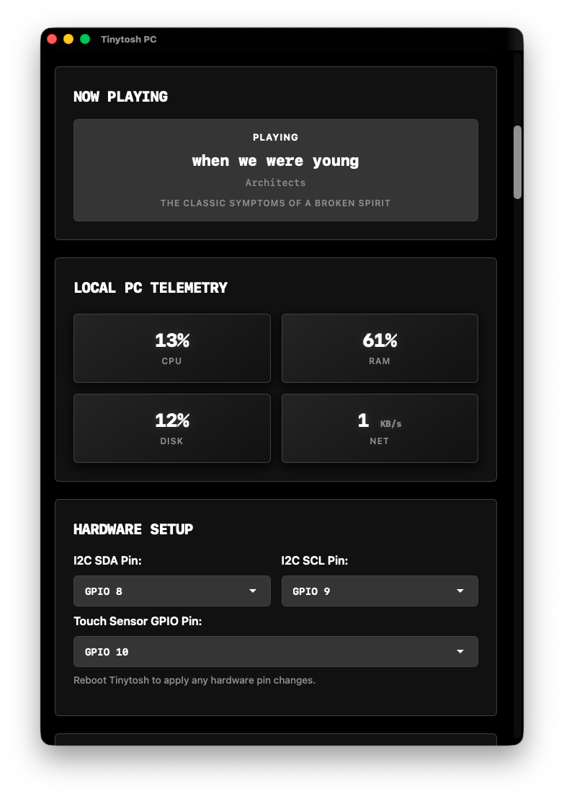

Tinytosh
Meet Tinytosh: The ultimate open-source desktop companion that brings your workspace to life. Whether functioning as a standalone smart display or a real-time PC hardware monitor, it delivers critical data at a glance. Best of all, it relies on 100% free public APIs — no API keys, no accounts, and no authorization required.
Available Screens & Services
- 🕒 Internet Clock: Auto-syncs time and date based on your location.
- 🌤️ Weather Station: Live Temperature, Humidity, and Forecasts (via Open-Meteo).
- 🍃 Air Quality: Monitor local AQI levels (US & EU Standards).
- 📊 Stock Tracker: Track market data for ~100 top global assets, ETFs, and Mega-Cap Tech with daily trend indicators.
- 📈 Crypto Tracker: Watch your favorite coin (from top 75 global cryptos) with price and trend indicators.
- 💱 Currency Tracker: Track exchange rates for over 150 fiat currency pairs with custom scaling multipliers.
- 🖥️ PC Hardware Monitor: Connects via USB or Wirelessly to your Windows/Mac/Linux computer to show CPU Load, RAM Usage, and Network Speeds in real-time!
- 🎵 PC Media: Displays currently playing track, artist, album, and playback status from your connected computer.
- 🖨️ Bambu 3D Printer: Local network telemetry for your Bambu Lab printer (progress, temperatures, fans, and print status).
Step 1: Hardware & Wiring
Components Required
- ESP32-C3 SuperMini (Microcontroller)
- 0.96" OLED Display (I2C 128x64)
- Silicone Wires (30AWG recommended) or Jumper Wires
- TTP223 Touch Sensor (Optional, for button)


Wiring Notes:
- For a Basic Setup (Screen only), standard female-female jumper wires work perfectly. Soldering is optional but recommended for a cleaner, more durable build.
- For the Full Setup (Screen + Button), soldering is required to share the limited power pins and ensure a reliable connection.

| Component | Pin Name | ESP32 Connection | Notes |
|---|---|---|---|
| OLED Display | VCC | 3.3V or 5V | Power |
| GND | G (GND) | Ground | |
| SCL | GPIO 9 | I2C Clock | |
| SDA | GPIO 8 | I2C Data | |
| Button (Optional) | VCC | 3.3V | Do not use 5V for button |
| I/O (SIG) | GPIO 10 | Input Signal | |
| GND | G (GND) | Use Y-splitter or solder to share ground |
🛠️ Assembly in 5 Steps
The 3D-printed case is designed for a tool-free, screwless assembly:
- Print the Case: It consists of two parts (Main Body & Cover) designed with precise rails for a secure snap-fit.
- Prepare Hardware: Solder or wire your components according to the table above.
- Slide in Display: Insert the OLED into the dedicated guide slot from the top. Internal stoppers ensure it sits perfectly level at the bottom.
- Insert Electronics: Place the microcontroller inside the case.
Touch Button Tip: If installed, position the sensor against the top of the case. If your wires are rigid, it will naturally rest against the roof; otherwise, use a drop of glue or a piece of tape to secure it.Design Note: The ESP32 floats freely inside the case without a tight mount. This is done deliberately to provide ample space for you to add extra sensors, batteries, or peripherals for your own projects. Despite this, the board hardly moves once the case is closed, ensuring no issues when inserting the USB cable.Align the Cover with the rails on the Main Body and snap it shut.
- Connect: Plug a USB-C cable into the port cutout on the back.
Troubleshooting: If the device constantly connects and disconnects (boot loop) when plugged in, unplug it, hold the button labeled BOOT on the board, plug it back in while holding, and wait 2 seconds before releasing. This forces "Download Mode" so you can flash it.
You can download the STL/3MF files for the case on MakerWorld. Includes a ready-to-print profile with optimized settings.
📸 View Assembly Images


Step 2: Flash Firmware
Web Installer
The easiest way to get started. Connect your ESP32-C3 to your computer via USB and click the button below. Note: Requires a Chromium-based browser (Chrome, Edge, Opera).
Manual Installation
If the web installer doesn't work for you, or if you prefer to customize the firmware using Arduino IDE or PlatformIO, you can download the source code directly.
The source code requires specific external libraries (WiFiManager, ArduinoJson, Adafruit SSD1306, Adafruit GFX Library, OneButton, PubSubClient) to compile successfully.
Please ensure you install all dependencies listed in the "Build & Compile Guide" section of the GitHub README.
Get the latest code from the GitHub repository.
Step 3: Initial WiFi Setup
-
Connect to Device: On your Phone or PC, search for the WiFi network named
Tinytoshand connect.
🔑 Password:Tinytosh -
Configure Credentials: A "Captive Portal" page should open automatically.
(If it doesn't open, type192.168.4.1into your browser).
Click the Configure WiFi button, select your home network, and enter your password. -
Catch the IP & Name: The device will attempt to connect. Watch the OLED screen closely!
Upon success, it will display "Connected!" followed by its IP Address (e.g.,192.168.0.100) and its unique Device Name (e.g.,tinytosh-ab12).⚠️ Note: This screen is displayed for only 3 seconds. If you miss it, simply unplug and replug the device to see it again. -
Access Panel: Connect your Phone/PC back to your Home WiFi (the same one Tinytosh is on). Type the IP address OR the unique local address (e.g.,
http://tinytosh-ab12.local) into your browser to open the Web Panel.
📸 View Connection Walkthrough


Step 4: Web Panel Configuration
Access the Web Panel by entering the device's IP address (or .local name) into your browser. Configure your device using the sections below:
Tinytosh is designed to be fully customizable. Every screen listed below (Time, Weather, PC, etc.) acts as a standalone module.
How it works: Each section in the Web Panel has a main Enable Checkbox.
• Uncheck it: The screen is completely removed from the rotation and the settings collapse.
• Check it: The settings expand, and the screen is added to the cycle.
Example: Disable everything except "PC Monitor" to turn Tinytosh into a dedicated hardware tracker, or enable everything for a complete smart hub.
Take full control of your device's flow using the Screen Display Order panel.
How it works:
• Grab the ☰ handle to drag and drop your active screens into any sequence you like.
• Disabled screens are automatically pushed to the bottom and locked out of the rotation.
• Dynamic UI: When you click Save, the configuration panels on this web page will physically rearrange themselves to perfectly match your new custom layout!
🎥 View Interface Demo

- Switch Screens Automatically: If checked, screens rotate automatically. If unchecked, the screen stays static until you press the hardware button.
- Screen Cycle Interval: Time (in seconds) each screen stays visible before rotating.
- Data Sync Interval: Frequency (in minutes) of data fetches for Weather, Air Quality, Crypto, Stocks, and Currencies.
Customize how the device transitions between different screens:
- Active Animations: Select exactly which effects you want to enable (Slide, Dissolve, Curtain, Blinds). If multiple are checked, the device will randomly cycle through your specific selection.
- Time Format: Toggle between 12-hour (AM/PM) and 24-hour clock formats for both the device and web panel.
Tinytosh uses these settings to provide accurate Clock, Weather, and Air Quality data.
- Auto-Detect: Uses your IP address to automatically determine location and timezone.
- Manual Entry: Override with specific City names, Latitude/Longitude coordinates, and Timezone strings.
Set a quiet schedule to minimize sleep distractions and conserve API quotas.
- Action Modes: Choose what happens during the scheduled hours: No Visual Change, Dim Display (minimum hardware contrast), Turn Display Off (completely black), or Dim then Turn Off (gradually steps down).
- Dim Start Time: If you select "Dim then Turn Off," an extra time picker will appear. This lets you set exactly when the screen dims before fully turning off later in the night.
- Smart Latching: Night Mode won't interrupt your reading. It waits patiently until the rotation naturally lands on your first (primary) screen before applying the dark settings and pausing the screen cycle.
- Background Optimization: Background data fetches (Weather, Crypto, etc.) automatically slow down 10x during Night Mode to save power.
- Temporary Wake: If the screen is Off, pressing the physical button will temporarily wake the device at minimum brightness for 30 seconds so you can check the time in the dark!
🎥 View Animation Demo

If you installed the optional TTP223 touch sensor, you can control Tinytosh directly:
- Single Tap: Instantly skips to the next active screen in your rotation. If the display was turned off by Night Mode, this temporarily wakes it up.
- Long Press (Hold): Locks or unlocks the current screen. Disables the auto-cycle rotation so you can keep a specific screen visible as long as you want.
Displays the current time and date, automatically synchronized via the internet based on your local timezone.
While location and timezone are managed in Global Settings, this screen offers specific customization:
- Date Toggle: Choose to display the full date or hide it for a cleaner look.
Standard: A balanced view showing time at the top (Size 3) and the date/day below.
Minimalist: If the date is disabled, the clock switches to Jumbo Mode (Size 4), perfectly centered on both axes for maximum readability.
📸 View Screen Preview


Fetches and displays real-time weather conditions and daily forecasts based on your location.
- Temperature Unit: Toggle between Celsius (°C) and Fahrenheit (°F).
- Round Values: Choose between rounded integers (22°) or precise decimals (21.8°).
Top: City and Time. Center: Big Temperature and condition icon/desc. Bottom: Feels like, Humidity (%), and Wind Speed (km/h).
Source: api.open-meteo.com📸 View Screen Preview


Monitors local Air Quality Index (AQI) and specific pollutant levels to keep you informed about your environment.
Choose your preferred AQI standard (US or EU).
Top: City and Time. Center: AQI Value, Standard Type, and Status Icon. Bottom: Real-time PM2.5, PM10, and NO2 levels in µg/m³.
Source: air-quality-api.open-meteo.com📸 View Screen Preview


Tracks live market data for ~100 top global assets, including US Mega-Cap Tech, broad market ETFs, and international ADRs.
- Asset Selection: Choose your preferred stock or ETF from the curated dropdown.
- Display Format: Toggle between showing the minimalist Ticker (e.g., AAPL) or the Full Company Name (e.g., Apple Inc.).
Shows the stock ticker/name, current price in USD, a daily trend icon, and the percentage change since the previous close.
Source: stooq.com📸 View Screen Preview


Tracks live market prices and 24-hour trends for the top 75 global cryptocurrencies.
- Coin Selection: Select your preferred coin to track its live market data.
- Display Format: Toggle between the clean, standard Ticker (e.g., BTC) or displaying the Full Coin Name (e.g., Bitcoin).
Shows the coin ticker/name, current price in USD, a daily trend icon, and the 24h percentage change.
Source: api.coinlore.net📸 View Screen Preview


Tracks live exchange rates between over 150 global fiat currencies.
- Base & Target: Select your currency pair (e.g., USD to EUR).
- Multiplier Amount: Essential for viewing exchange rates with large differences. Instead of viewing the tiny fraction for 1 unit, you can track the rate for 10, 100, 1,000, or 10,000 units for better readability.
- Display Format: Toggle between the Base Currency Code (e.g., USD) or displaying the Full Currency Name (e.g., US Dollar).
Top Left: Base Currency (Large). Bottom Left: Target Rate. Right Side: Multiplier context aligned to the edge (e.g., "1 USD =", "1000 ARS =").
Source: cdn.jsdelivr.net/@fawazahmed0/currency-api📸 View Screen Preview


Connects to the Tinytosh PC software on your computer to stream hardware telemetry via USB or Wirelessly.
- Auto-hide: Choose to automatically hide this screen from your rotation when the PC is disconnected or turned off.
Displays four horizontal bars: CPU Load (%), RAM Usage (%), Disk Capacity (%), and Network Download Speed (KB/s or MB/s).
Source: Tinytosh PC📸 View Screen Preview


Streams current media playback info from your PC via the Tinytosh PC software (Spotify, Browsers, Apple Music, etc.).
- Auto-hide: Choose to automatically hide this screen from your rotation when no media is currently playing.
Displays a media icon, playback status (Playing/Paused/Stopped), Track Name, Artist, and Album.
Source: Tinytosh PC📸 View Screen Preview


Connects directly to your BambuLab 3D printer over your local network to stream live printing telemetry.
- Required Credentials: You will need your printer's Serial Number and Access Code. You can easily find these on your printer's physical screen under Settings > Network (or WLAN).
- Printer IP Address: This field is optional. Tinytosh features an auto-discovery scanner that will actively hunt for your printer on the network. If your router assigns a new IP to your printer every restart, simply leave this blank!
- Connection Time: After entering your settings, please allow up to a minute for Tinytosh to negotiate the secure connection. The data will start populating on the Web Panel and your OLED display once connected.
- Auto-hide: Choose to automatically hide this screen from your rotation when the printer is offline or disconnected.
This module dynamically changes its screen layout based on what the printer is doing:
- Idle Mode: When the printer is resting, displaying a cluttered screen full of zeros makes no sense. The UI shifts to a minimalist layout showing just a large printer icon, the "Idle" status, and the current bed and nozzle temperatures.
- Printing Mode: When a print starts, the UI expands into a dense telemetry dashboard showing: Print Progress (%), Time Left (mins), Current vs Total Layers, the File Name, Target & Actual Temperatures for Bed/Nozzle, and Part/Auxiliary Fan speeds (%).
📸 View Screen Previews




Step 5: PC Software
To enable PC Monitor and PC Media modes, you need the PC software running on your computer. This lightweight app reads your system stats and sends them to Tinytosh over USB or Wi-Fi.


- Native Monitoring: Reads system stats (CPU, RAM, Network) directly — no AIDA64, HWiNFO, or third-party bloatware required.
- Wireless Telemetry & Auto-Connect: Automatically discovers Tinytosh devices on your network (mDNS) and connects on startup to broadcast stats via USB or completely wirelessly!
- Smart Connection Fallback: Prioritizes USB for stability. Yank the cable? It instantly and silently falls back to Wi-Fi.
- Hardware Pairing Lock: Tinytosh securely pairs to the active PC to ensure multiple computers don't fight over the display.
- Dynamic UI & Complete Control: The PC app dashboard mirrors your device! Configuration panels automatically reorder in real-time, letting you manage all settings directly from the desktop.
- Real-time Dashboard: See exactly what telemetry data is being sent to your device at a glance.
- Manual Control: Override port/IP selection and toggle data streaming instantly.
- System Tray & Boot: Minimizes quietly to the background; accessible anytime via the tray icon, with an optional setting to launch automatically on login.
I am a hobbyist developer, not a corporation. I do not have expensive code-signing certificates from Microsoft or Apple. Because of this, your OS or browser may flag the app as "Unknown" or "Potentially Dangerous." This is standard behavior for unsigned open-source software.
If you have concerns, the entire project is open-source. You are welcome (and encouraged!) to review the code on GitHub to verify it is safe.
Browser may block the download. Click "Keep" or "More actions > Keep anyway". SmartScreen may also appear; click "More Info > Run Anyway".
If you see "App is damaged" or "Can't be opened", move it to Applications, open Terminal, and run:
xattr -cr /Applications/TinytoshPC.app
Step 6: Enjoy & Innovate
Congratulations! Your Tinytosh is now up and running.

Tinytosh is Open Source for a reason — it is designed to be a playground for your creativity. You are not limited to the features provided out of the box.
Make it Yours
- Modify the Code: Hack the source, tweak fonts, or adjust animation speeds.
- Build New Modules: Create your screen, design new animation, or add customization.
- Share Your Work: Show off your build, remix the case, or contribute new features.
The best features come from user suggestions. If you have an idea for a new screen, found a bug, or just want to show off your build, join the conversation on your preferred platform.